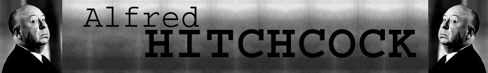
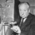
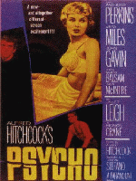

|
Hitchcock, la légende du suspense |
 Psychose |
|
 Psycho (1960) Psychose Psychose est le film d'Hitchcock par excellence. Le scénario est excessivement simple (pour ne pas dire banal) et pourrait facilement constituer la base d'un redoutable navet ! (n'est pas Sir Alfred qui veut) L'action démarre à Phoenix, Arizona. Une jeune femme, Marion Crane (Janet Leigh) qui est la maîtresse de Sam (John Gavin) dérobe dans un moment d'égarement une valise contenant quarante mille dollars que son patron lui avait demandé de déposer à la banque. A la nuit, elle s'arrête dans un motel peu fréquenté et tenu par Norman Bates (Antony Perkins) qui se confie à elle en lui expliquant qu'il vit dans la maison proche du motel avec sa vieille mère invalide et de caractère très difficile. Avant de se coucher, Marion prend une douche quand la vieille femme surgit et la poignarde sauvagement ! Norman réapparaît, fait disparaître le corps de Marion ainsi que sa voiture (avec les 40 000 $ dans le coffre) dans un étang proche du motel. Marion est alors recherchée par sa soeur Leila (Vera Miles), par Sam et par un détective d'une compagnie d'assurances (Arbogast) chargé de récupérer l'argent. Le détective se rend au motel. Norman le reçoit mais lui interdit formellement de rencontrer sa mère. Déçu, Arbogast part téléphoner à Leila et Sam et s'introduit dans la maison pour parler à la vieille dame. Il monte l'escalier mais il est accueilli à coup de couteau par la mégère. Leila et Sam vont voir le shérif qui leur apprend que la mère de Norman est morte et enterrée depuis huit ans. Ils se rendent tous deux au motel et Leila, en fouillant la maison échappe de peu aux coups de couteau fatals dans la cave de la maison. Démasqué par Sam, Norman perd sa perruque. Deux personnalités co-existaient en lui depuis la mort de sa mère dont il avait embaumé et conservé le corps dans la maison. Le film se termine sur le procès et l'internement de Norman (ainsi que la récupération de la voiture de Marion dans l'étang). Dans ce film, le macguffin est l'argent volé par Marion au tout début du film. Il va sans dire que la suite des évènements le fait bien vite oublier. Psychose est un des plus grands succès d'Hitchcock. Tourné volontairement en noir et blanc, il n'a coûté que cent mille dollars et en a rapporté plusieurs dizaines de millions. Le film a eu deux suites dont la deuxième réalisée par Antony Perkins lui-même. Psychose est extrêmement épuré au niveau des décors et il est muet pour la moitié du temps (il comporte deux ou trois bobines sans aucun dialogue). La mise en scène est aiguisée comme le couteau qui sert aux meurtres à commencer par le générique qui montre des bandes noires et blanches entrelacées sur une musique stridente. Hitchcock insiste sur l'opposition des lignes verticales et horizontales : la grue coupant l'horizon de Phoenix au début, Marion couchée et Sam debout dans les premières minutes de la scène de la chambre d'hôtel, la maison verticale par opposition au motel horizontal. Un autre thème cher à Hitchcock et largement exploité dans Psychose est l'opposition du bien et du mal et la notion de châtiment. Aucun des personnages de Psychose n'est réellement sympathique ni honnête. Sam a une liaison illégitime avec Marion qui se promène fortement dévêtue (nous sommes en 1960), et surtout qui dérobe l'argent, cet argent étant lui-même d'origine douteuse (aux dires du propriétaire, Tom Cassidy). Norman Bates désire fortement Marion dès l'instant où il la voit et fait le voyeur à travers un trou du mur : que c'est laid ! De là à penser que le bras vengeur qui tient le couteau - couteau qui reste propre tout au long du film - serait l'instrument d'une justice divine, il n'y a qu'un pas !
Vidéo du générique
A sa sortie, le côté suspense insoutenable fut entretenu par les
affiches de l'époque incitant le spectateur à ne pas raconter la fin du film
et indiquant que "personne ne pourrait pénétrer dans la salle de
projection après de début du film". |